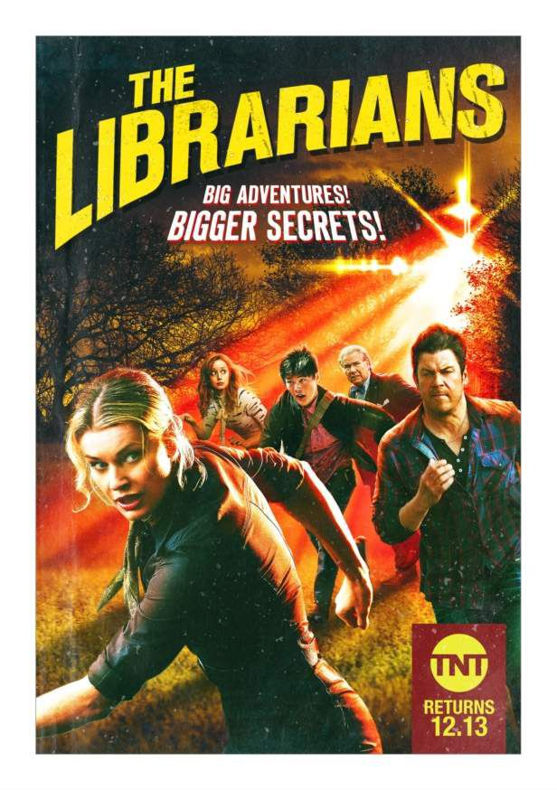

| 1 |
The 100 |
4,7 |
Des enfants mutants de l'espace se retrouvent livrés à eux-même sur une terre irradiée |
|
| 2 |
Lucifer |
4,6 |
Tout est dit dans le titre... |
|
| 3 |
The librarians |
4,4 |
De drôles de libraires un peu zinzins qui voyagent un peu partout grâce à la magie |
|
| 4 |
Shadowhunters |
4,1 |
Une jeune fille mi-ange se découvre des pouvoirs pour combattre les méchants démons et son c****** de père(existe aussi en film) |
 |
| 5 |
Docteur Who |
Un docteur bizarre qui voyage dans le temps dans une boîte bleue et toujours accompagné d'un dalek |
|
| 6 |
Gossip girl |
3,8 |
Une série nulle sur des ados riches de New-YorK mais j'adore et j'assume |
 |
|
| 7 |
Perdus dans l'espace |
3,7 |
Une famille de colons se perd dans l'immensité de l'espace accompagné d'un méchant robot mangeur d'enfants et d'un psy complètement folle |
|
| 8 |
Timeless |
3,4 |
Des gens qui voyagent dans le temps dans une boîte en suivant un carnet |
|
| 9 |
The witcher |
3,2 |
Un sorcier coincé qui tue des monstres et qui a eu une fille en cadeau de remerciement |
|
| 10 |
Riverdale |
3 |
L'avantage de cette serie, c'est que plus on avance, plus elle est nulle et moins elle a de sens. Pleine de suspens et de rebondissement quoi... |
|